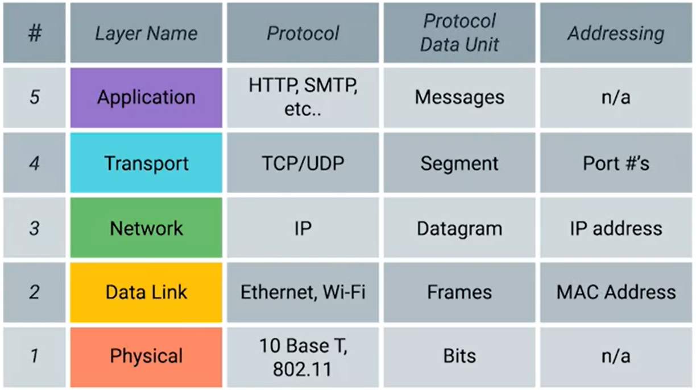

1. physical - devices that intraconnect computers - eg cables and connectors
2. data link (network access layer) - defining a common way of interpreting these signals
3. network (internet layer) - allows different networks to communicate thourgh routers

delivers data between 2 indevidual nodes
4. transport layer,mostly TCP and UDP, is responsible for ensuring that data gets to the right applications running on those nodes.
tcp - provides handshake
udp - no reliability